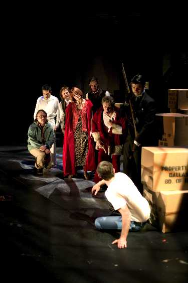
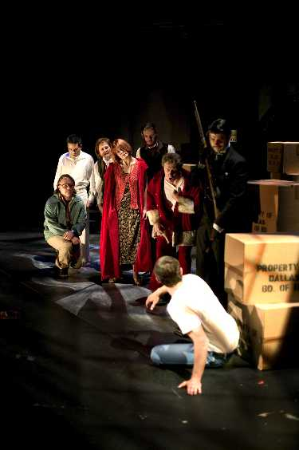

"...Sondheim's sharpest work..."
The Company
Stephen Sondheim's musical ASSASSINS will have its Tucson premier with Arizona Onstage Productions* May 13-23 at the Lab Theatre, University of Arizona Theatre Arts Complex, near the corner of Park and Speedway. Described by The New York Times as "A brillant, frightening, hilarious masterpiece...", ASSASSINS is directed by Carol Calkins and features a cast of 23, including Liz McMahon (known for her acclaimed portrayals of Patsy Cline and Sophie Tucker), Actors' Equity Members Monte Ralstin, J. Andrew McGrath, Kevin Johnson and David Mordon, University of Arizona Theatre Arts Majors Benjamin Crawford, Luke Bishop, Ethan Goldman, Shawna Cormer, Andrew Goldwasser, Katrina Haynes, David Olsen, Carly Preston, Sarah Spigelman, Brian Wertz, and Christine Woods, as well as Stephanie Sikes, Nick Sarando, Zachary Karon, Elliot Morse, and Jalyn Wheatley. Music direction is by Chris Wingert, Vocal direction is by Dr. Harlan Hokin, costume design by Jennifer Dasher, and choreography by Stacy Johnson.
* 2003 MAC Award Nominee - Best Musical "FALSETTOLAND"
| |
|
What is it about?
This most American of musicals lays bare the lives of nine individuals who assassinated, or tried to assassinate, the President of the United States, in a 95-minute historical staging that explores the dark side of the American experience. From John Wilkes Booth to Lee Harvey Oswald, composer Stephen Sondheim (Sweeney Todd, Into the Woods, A Little Night Music) and John Weidman bend the rules of time and space, taking us on a wild journey in which assassins and would-be assassins from different historical periods meet, interact, and become infamous.
ASSASSINS is "perhaps Sondheim's sharpest work - a knockout show" according to Newsweek.
ASSASSINS contains a highly melodic score which pastiches American music throughout the ages, from folk to ragtime to 1970s rock. While Stephen Sondheim's unique music infuses the score, echoes of American composers such as Stephen Foster, Aaron Copeland, and John Phillip Sousa can be heard.
ASSASSINS was originally presented off-Broadway in 1990 by Playwrites Horizons. The highly anticipated Broadway premier of ASSASSINS will be presented by The Roundabout Theatre Company in New York City, opening April 26th for a nearly sold-out run in The Big Apple. | |
E-mail the webmaster with any problems you may experience.
|
 
